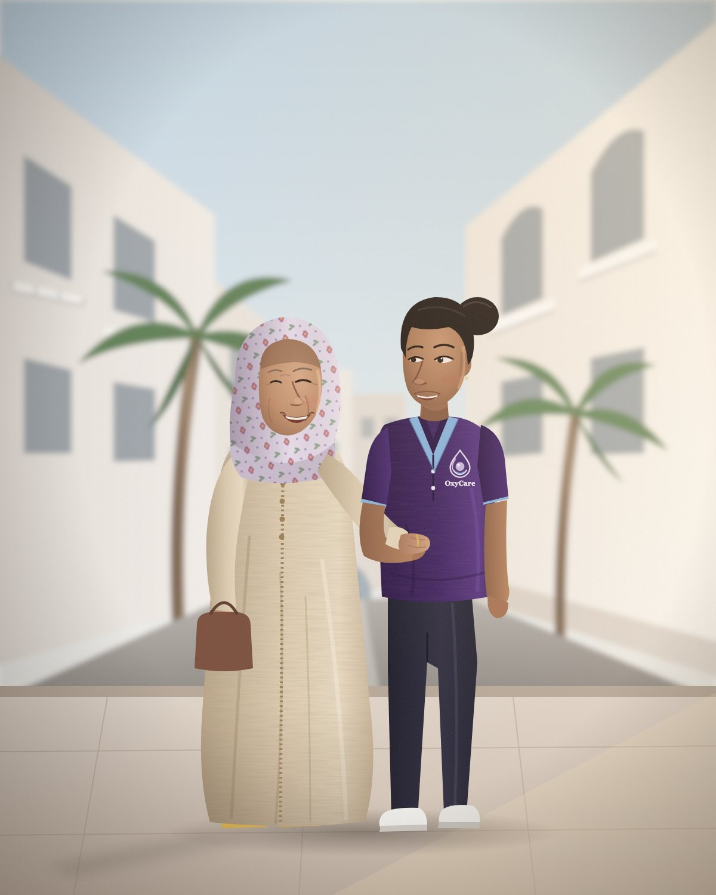
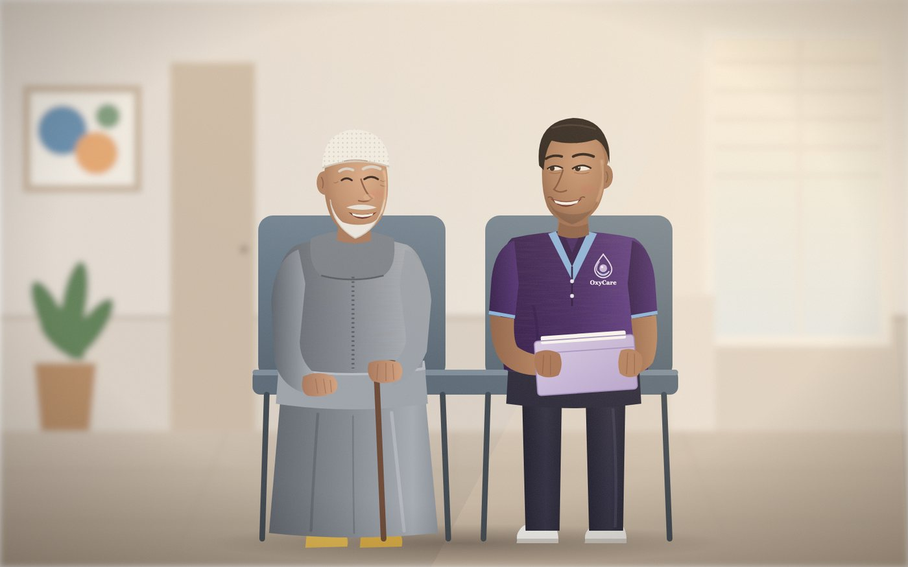
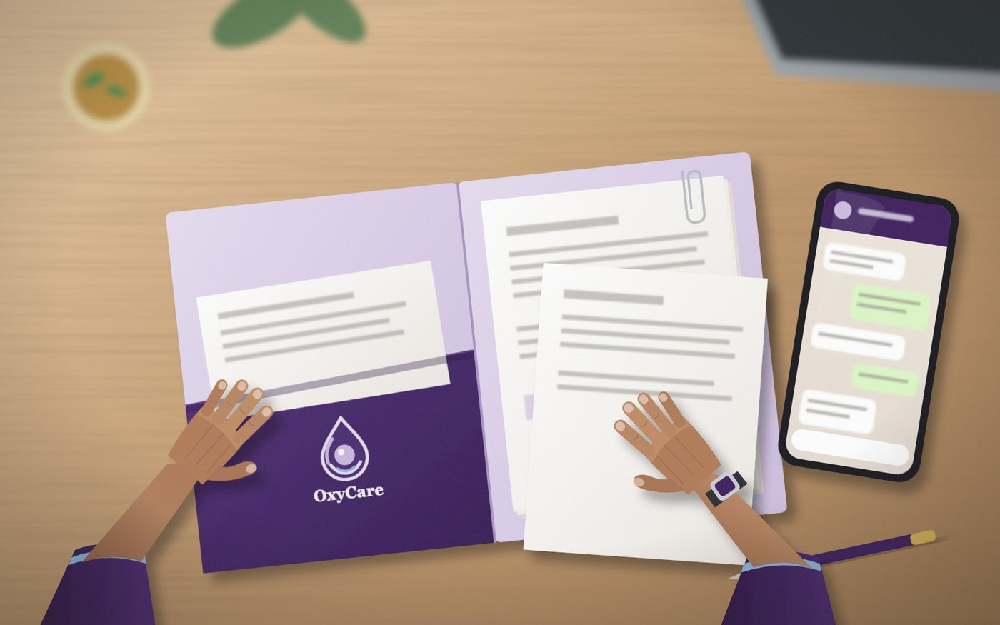
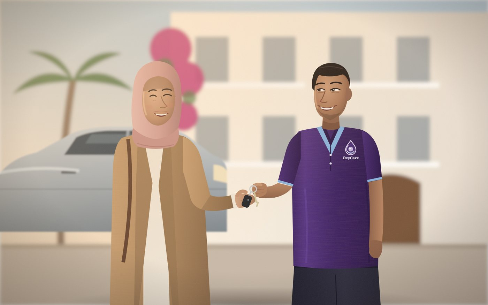
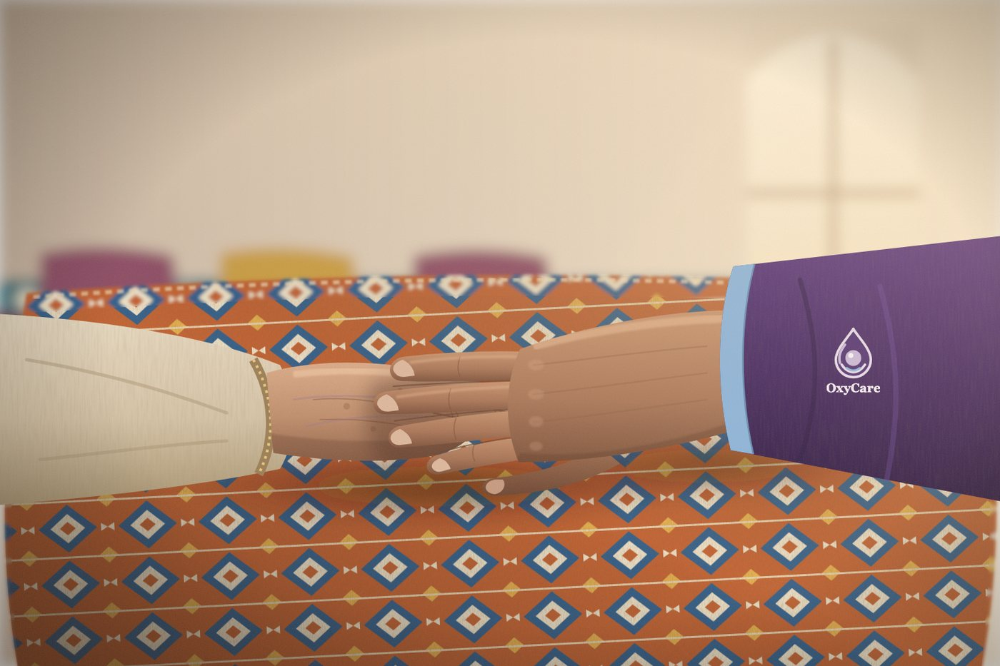
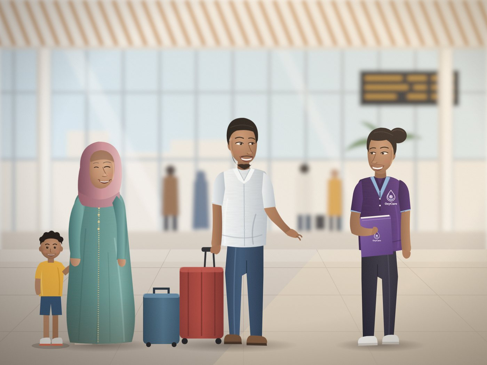

Senior Concierge & Family Logistics, Rabat
Vos parents accompagnés, vos démarches gérées, des nouvelles en temps réel.
ديما حدّاك ديما معاكOxyCare, anciennement Oxygène Excellence Assistance, accompagne les seniors et simplifie la vie des familles à Rabat, qu'elles vivent ici ou à l'étranger.
- Basés à Agdal, Rabat
- Devis en moins de 2 h
- Compte-rendu WhatsApp après chaque intervention

Nos services
Trois façons de vous simplifier la vie

Accompagnement des seniors
Rendez-vous médicaux, marché, sorties : une présence attentionnée, au rythme de vos parents.
Voir le service →
Démarches administratives
Moukataâ, CNSS, AMO et documents officiels : dépôt et suivi complet, sans files d'attente.
Voir le service →
Gestion automobile
Visite technique, vidange et entretien, renouvellement d'assurance, jusqu'à la remise des clés.
Voir le service →Comment ça marche
Quatre étapes, aucune file d'attente
Vous nous écrivez
Sur WhatsApp, par téléphone ou via le formulaire.
Devis en moins de 2 h
Nous clarifions le besoin et vous envoyons une proposition claire.
Nous intervenons
Une personne de l'équipe OxyCare s'en charge, à l'heure convenue.
Compte-rendu WhatsApp
Vous recevez des nouvelles et des photos après chaque étape.
Pourquoi nous faire confiance
Votre confiance, notre exigence
Deux mains qui protègent ce qui est précieux : c'est notre logo, et c'est notre façon de travailler.

Un compte-rendu WhatsApp après chaque intervention : vous savez toujours ce qui a été fait.
Des checklists et des dossiers suivis de bout en bout, par une équipe formée.
Le respect de la dignité et du rythme de chaque personne âgée, sans jamais décider à sa place.
Les avis de nos premières familles seront publiés ici, avec leur accord écrit.
Offre de l'été · MRE
Marhaba Bkoum
Vous rentrez au Maroc pour quelques semaines ? Confiez-nous vos démarches, votre voiture et le quotidien de vos parents, et profitez de votre séjour.

Questions fréquentes
Avant de nous confier une mission
Une autre question ? Écrivez-nous sur WhatsApp, nous répondons rapidement.
Faites-vous des soins médicaux ?
Non. OxyCare propose un accompagnement non médical : nous accompagnons vos proches à leurs rendez-vous, nous sommes présents et nous vous tenons informés, mais nous ne réalisons aucun soin.
Comment suivez-vous les interventions à distance ?
Après chaque intervention, vous recevez un compte-rendu sur WhatsApp, avec des photos lorsque c'est utile et que la personne accompagnée est d'accord.
Comment demander une intervention ?
Écrivez-nous sur WhatsApp, appelez-nous ou remplissez le formulaire de contact. Nous revenons vers vous avec un devis en moins de 2 heures.
Où intervenez-vous ?
Nous sommes basés à Agdal et intervenons à Rabat. Pour les communes voisines, contactez-nous pour vérifier votre secteur.
Combien ça coûte ?
Cela dépend du service et de la fréquence. Consultez nos formules sur la page Tarifs, puis demandez votre devis personnalisé.
Prochaine étape
Parlons de ce qui vous simplifierait la vie
Chaque situation est différente. Décrivez-nous votre besoin, nous vous répondons avec une première orientation claire et sans engagement.